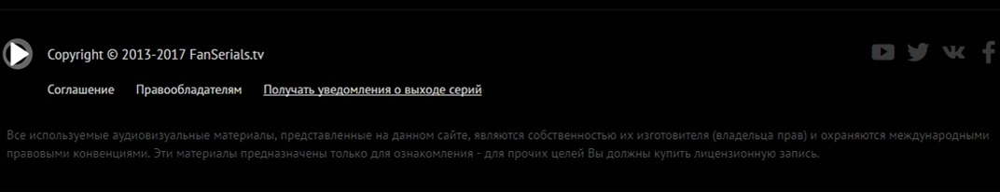

<!--start blocks/head--><!DOCTYPE html>
<html lang="ru"></html>
<head>
  <meta charset="UTF-8"/>
  <meta name="viewport" content="width=device-width, initial-scale=0.7, maximum-scale=0.7, user-scalable=no"/>
  <title>fanserials</title>
  <link rel="stylesheet" href="https://fonts.googleapis.com/css?family=PT+Sans:400,400i,700,700i&amp;amp;subset=cyrillic-ext"/>
  <link rel="stylesheet" href="css/reset.css"/>
  <link rel="stylesheet" href="css/owl.carousel.min.css"/>
  <link rel="stylesheet" href="css/carousel.css"/>
  <link rel="stylesheet" href="css/style.css"/>
</head>
<body>
  <!--start blocks/header-->
  <header>
    <nav class="header">
      <ul class="nav__top"><a href="#" class="logo"></a>
        <li class="nav__top--item"><a href="#">Список сериалов</a></li>
        <li class="nav__top--item"><a href="#">Популярные сериалы</a></li>
        <li class="nav__top--item"><a href="#">Новинки </a></li>
      </ul>
      <div class="header--right">
        <div class="wrapper__search"> 
          <input type="text" placeholder="Поиск" class="search search__top"/>
          <div class="search__top--close">&#59651;</div>
        </div>
        <div class="user"></div>
      </div>
      <div class="clear"></div>
    </nav>
  </header>
  <div class="wrapper--main static">
    <div class="breadcrumbs">
      <ul>
        <li><a href="#">FanSerials</a></li>
        <li><a href="#">FanSerials</a></li>
        <li><a href="#">FanSerials</a></li>
        <li><a href="#">FanSerials</a></li>
        <li><a href="#">Для правооблдателей</a></li>
      </ul>
    </div>
    <div class="h1">Для правообладателей</div><br/>
    <p class="text__static">Если Вы являетесь обладателем исключительных прав на какой-либо материал, ссылка/ссылки на который находятся на данном сайте, и не желаете, чтобы эта информация была распространена без Вашего согласия, мы с удовольствием окажем Вам содействие и уберем соответствующие ссылки с сайта.</p><br/><br/>
    <div class="h2 text__static">Для этого вам нужно отправить письмо в электронном виде со следующей информацией:</div><br/>
    <ol class="text__static">
      <li>1. Данные о продукте:</li>
      <li>1.1. Название продукта — русское и английское (в случае наличия английской версии).</li>
      <li>1.2. Официальная страница продукта в Интернете (в случае наличия).</li>
      <li>1.3. Номер, присвоенный продукту по государственному реестру.</li>
      <li>1.4. Для Юридического Лица / Правообладателя электронных изданий/программ для ЭВМ/баз данных - Копия документа о государственной регистрации.</li>
      <li>2. Для Юридического Лица / Правообладателя кино- и видеоматериалов - Прокатное удостоверение (копия).</li>
      <li>2.1 Данные о правообладателе:</li>
      <li>2.2. Полное наименование юридического лица.</li>
      <li>2.3. Почтовый адрес (в случае несовпадения юридического и почтового адреса – обязательное указание юридического адреса).</li>
      <li>2.4. Сайт правообладателя в сети Интернет.</li>
      <li>2.5. Лицензия на право деятельности (если таковая деятельность лицензируется в установленном законом порядке).</li>
      <li>2.6. Контактное лицо правообладателя (ФИО, должность, телефон, email).</li>
      <li>3. Данные лица, подающего жалобу.</li>
      <li>3.1. ФИО.</li>
      <li>3.2. Должность.</li>
      <li>3.3. Телефон.</li>
      <li>3.4. email.</li>
      <li>3.5. Копия доверенности на действия от лица Правообладателя (не требуется в случае если лицо подающее жалобу — руководитель компании Правообладателя). Если жалобу подает не правообладатель, а его уполномоченный доверенностью представитель - юридическое лицо, следует предоставить копию доверенности на действия физического лица от лица компании, уполномоченной доверенностью Правообладателя (не требуется в случае, если лицо подающее жалобу— руководитель компании представителя).</li>
      <li>4. Претензионные данные.</li>
      <li>4.1. Адрес страницы сайта, которые содержат ссылки на данные, нарушающие права. Ссылка должна иметь вид http://fanserials.tv/serials/serials-n-sezon/xxxx-serials-n-sezon-n-seriya.html</li>
      <li>4.2. Полное описание сути нарушения прав (почему распространение данной информации запрещено Правообладателем).</li>
      <li>5. Подписка о правомерности действий (заполняется от руки и высылается в отсканированном варианте). Обязательна для каждой жалобы.</li>
    </ol>
    <p>
       
      	Почта: fanserials@gmail.tv<br/>	Вы получите ответ в течение недели со дня отправления письма.
    </p>
  </div>
  <!--start blocks/footer-->
  <footer></footer>
  <script src="vendors/vendors.js"></script>
  <script src="js/app.js"></script>
</body>